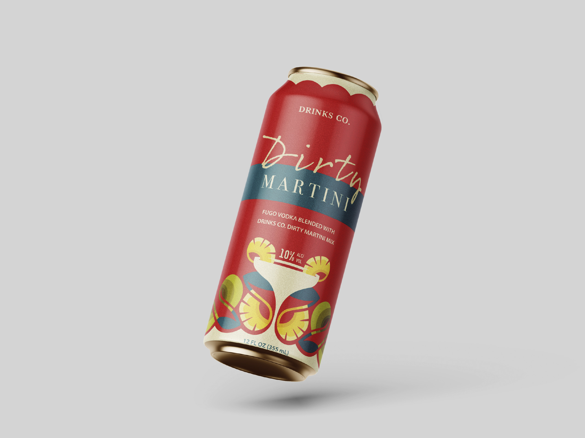

A class assignment where every student designed a can for the fictional brand Drinks Co. I chose a Dirty Martini flavor and went for an art deco direction, pairing a loose script with a tight serif, using red, cream, and teal to keep it feeling premium and a little retro.

← Back to works